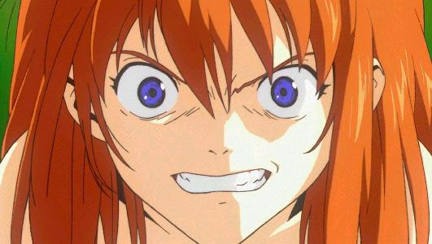
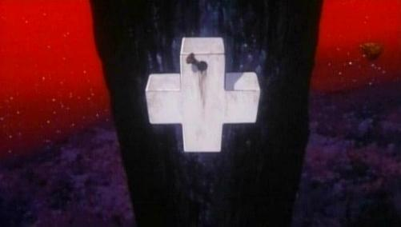
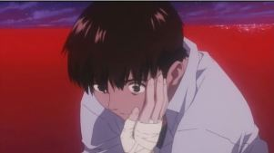
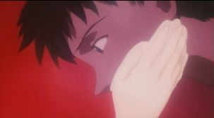

It seems to be received wisdom that Complementation reveals Asuka and Shinji's true love for each other; and that after trivial initial difficulties, this will win over all. It is also received wisdom that Shinji attempts to strangle her in an attempt to get a familiar dose of rejection.
First I saw the movie, I didn't see any love expressed, only desperation; and the unprovoked violence was enough to earn my contempt — this was so unlike the ending of the TV series, in which everyone was upbeat (in whatever Limbo they existed).
But on reflection, I think there is a different, and in some ways more positive interpretation of what was going on.
Death
Whatever the mechanism of sympathetic damage, Asuka is clearly in a bad way when we last see her, trapped in EVA-02, all power exhausted. The impact of the lesser Lance has damaged one eye, and her arm is split by another blow, all before the harpies descend.
There can be no argument that she died, and although we did not see it, she was greeted by Rei in a manner similar to Ritsuko and Misato, no later than the start of ep 26', Sincerely Yours.
Complementation
Coalescence — the pilots
The first we see of her in the growing Complementation is in intimate spiritual intercourse with Shinji

Asuka:
Jeeez! I get so pissed off whenever I look at you!
And she certainly looks like she means it.
Expansion — the recently deceased
The next stage of Complementation includes the other recently dead — Misato's unwilling, but uncensored regrets, that she could not replace Shinji's mother, which then blurs into the recollection of her marathon week abed with Kaji.
Asuka simply passes comment here from the last glimmers of innocence, before sex passes from abstract concept to pervasive reality.
So far it is clear that Complementation, the melding of the individual selves, necessarily involves the removal of all barriers, that deeds and words all mirror the internal states of the participants.
Reiteration — the past in a shattered mirror
And with that in mind, we move on to the three Shinji/Asuka stages, two twisted replays of earlier events, the kiss from episode 15, and the ret-conned “Kaji is dead, Asuka” from 24', with the intervening railway carriage scene separating them.
Here the statements and the actions in the flash-backs, where they depart from reality, are blunt and unambiguous
Asuka:
You don't understand anything! Stay away from me!Shinji:
(Hand twitching) ... I do understand.Asuka:
No you don't, you IDIOT!(Asuka kicks Shinji - Shinji's hand convulses)
You really think you understand me!? You think that you can help me?
That is so ARROGANT! You couldn't possibly understand me!!
The kiss — whatever the motivation in ep 15 — has become a kick.
The train ride
The scene then morphs to the train, where Shinji has been before, in his other interior adventures within EVA-01; Shinji's private hell, even if one that has always been shared by others who speak his mind back at him (not that “private” has any meaning at this point).
She knows about his only act of commission during Air and taunts him with it. And then, out of the blue, the only line that could possibly be interpreted as saying she feels something positive about the Third Child
Asuka:
Idiot! I ‘know’ about your jerk-off fantasies of me.
Do it again like usual… I'll even stand here and watch.Asuka:
If you can't be all mine, then I don't need you!
Now in the first line, the literal rendering is something to the effect of “You treat me like a side-dish.”, something on the side to spice up an otherwise bland diet of rice — Shinji finds out in no uncertain terms that if she's going to be on the menu, that she'd only want someone who'd treat her as the main course.
This could be as much Shinji's vision of the Asuka that he fears, the consuming maw of womanhood; or equally Asuka's need for, if not total devotion and obedience, then a man who is not afraid to admit his desire.
Shinji, alas, only seems to relate to women when they are unconscious, as in episodes 9 and 25'.
And then we are in Misato's kitchen, in what to me is one of the most harrowing parts of the film, matched only by Asuka's defeat while Shinji is cowering in the depths of the GeoFront.
The scene opens with Shinji seeming to attempt to console the disconsolate, when he utters the one line that suggests that he actually has some feelings for Asuka
Shinji:
I want to help you in some way... and to be with you forever.
But things rapidly go downhill with Asuka rejecting and scorning him. The final exchange is as good a précis of the whole as one can get
Shinji (weakly - getting to his feet):
Help me... Somebody... Somebody help me...
Help me... Help me... Me... Help ME!!(throws the table aside)
Don't leave me alone! Don't abandon me! Don't kill me!
(picks up a chair and throws it at Asuka's feet)
Asuka (coldly):
... No...(Shinji strangles Asuka - Komm Susser Tod (Come Sweet Death) begins to play)
Surprisingly, Shinji's line Don't leave me alone! Don't abandon me! Don't kill me! echoes this from ep 25
Shinji: Don't leave me.
Misato: Don't desert me.
Asuka: Don't kill me.
including Asuka's line.
Impact — the old world ending
Asuka's second death marks her exit from the scene for a while. Now Rei is Shinji's Virgil, leading him through the Purgatory of Third Impact, while the whole world is engulfed by this catastrophe. Only when subsumption is complete does she make a last contribution. Out of the babble of condemnation two lines are identified as hers
(Asuka's voice:)
Wimp...
and
Asuka (voice):
But, if I have to be with you, I'd rather die!
the last following after a reprise of the Do you want to become one with me? from ep 20.
And then follows the live action sequence.
There is footage and script out there for a live-action sequence that takes place in some alternate future where Shinji never was, and Asuka, improbably, becomes an office lady, rather than a neurotic scientist like Ritsuko. As it is not part of the actual text, I don't consider it here, except to dismiss it.
Shinji then rejects the unity of Instrumentality, and its embodiment (Giant Naked Rei, Shekinah) disintegrates, with likely consequences I discuss elsewhere for the physical world, Shinji parts from EVA-01, and in doing so, from his mother, who departs after one final caress of his cheek.
Transition — the re-embodied
Time has passed — where Misato's cross, the one she passed to Shinji back when she tried to galvanise him to action with the promise of sex, later, has been hung on a marker post; the rain and weather have left a trail of dark rust.
Two pilots lie on a darkling shore. And Shinji starts to strangle Asuka. She touches his cheek, and he weeps. With little vigour, she speaks the last words of the film:
Asuka:
How disgusting.
Why?
Hypothesis and synthesis
Shinji is just doing what he thought Asuka would want, given her last recorded communication with him “But, if I have to be with you, I'd rather die!”. She indicates her fond approval that he has remembered. He bottles. She reacts with disgust.
It implies that Asuka is broken, beaten down, and just wants out, for everything to actually be over, rather than almost so; she has made the effort of will to leave the indefinite suspension of LCL, but appears to be physically debilitated — bandaged, and unmoving, but for one arm.
Given what last happened to her in the physical world, she is now bereaved, and her raison d'être (being a — the — EVA pilot) taken from her, everything gone that awoke her from her previous suicidal state, and having suffered the harrowing of Complementation, I don't think that this is at all unlikely a possibility.
{kind=link}
At that point, rather than being a selfish cry for negative attention — the consensus opinion of why Shinji started strangling her — his act becomes one of twisted love, the sort of thing his Dad would be proud of; until, unwitting, Asuka's gesture
reminds him of his mother's similar farewell.
The memory of that same gesture of farewell is a very good reason why he might then be overcome with emotion and falter in his resolve.
The idea that she is broken also gives a reason for her uncharacteristic passivity, unlike what might be expected if the Asuka/Shinji shippers were right. In that case, rather than speaking her disgust, it would be more likely that she would start a tussle (that might end in a clinch if the credits didn't start rolling).
And Asuka, knowing that he was capable of willing murder — having experienced it first hand already once — shows her disgust that he's not capable of doing it once returned to reality. Her nightmare has come true.
Asuka:
This sucks!
— a more colloquial rendition.
Bad End
Of course, Shinji might just be the little squit we already take him for, and his action is not a plea for rejection, nor an act of merciful release, but a continuation of unfinished business from the kitchen scene back in the heart of Instrumentality. Whether Asuka may or may not welcome this, based on her previous words really doesn't matter; only that she is debilitated enough not to struggle.
And in this ending, I would render her last line by misapplying a quotation from Marlowe's Faust, Mephistopheles' line to Faust:
Asuka:
Why, this is Hell; nor am I out of it.
which was my first reading of the ending.
Attributions
Quotations taken from Bochan Bird's translation at evaotaku.com, except for the section of ep 25 from the Literal Translation Project.
It seems that the rumour that some of the harsher Shinji/Asuka byplay was a result of unrequited passion by Anno towards Miyamura Yuko (Asuka's VA) may be groundless.